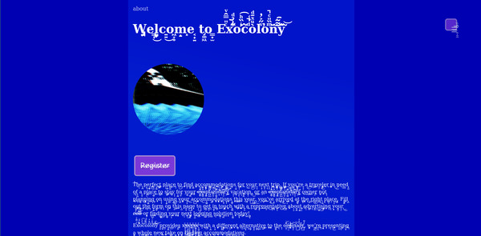

Lee Tusman
↩ Everyday
<
>
Title: Exocolony
Year: 2023
Medium: Website
URL: http://oral.pub/exocolony/↩
Description:
ExoColony is a playable speculative sci fi story about a distant planet under the process of corporate colonization from Earth. It is situated in a version of our not-too-distant future and presented as a series of pages and web forms. The player is a user. The player is a person on holiday. The player is a corporate executive. They are a future colonist. A corporate sound designer. An injured worker. Deceased. Their own offspring. W̡̪e͇͎͜l̺̟̙c͍͍͜o͖̞͙m̝͓e͔̟͍ t̡͚͖o͇̟̫ Exocolony.
Last year I experienced a brain injury, and went through a process of rehab. My experience, aside from talking with doctors, doing exercises, practicing balance, has also been reading and filling out dozens of forms. Evaluating progress. Communicating through obscure medical messaging systems on various platforms. Sending information into the void. This was especially difficult to navigate during the early weeks of the brain injury, when it was unclear to me how recovery would go. My brain was full, foggy, confused or tense. I had trouble with the forms and with some conversations. I created this speculative, grotesque sci fi work in fits and starts. Separated parts at times approach a whole.
ORAL.pub publishes poetry/art made for and inseparable from the web. ORAL.pub sites take advantage of their medium; their modes of interaction are meaningful and often defy our internet instincts.--ORAL.pub
Published: ORAL.pub

 ©opyleft
©opyleft